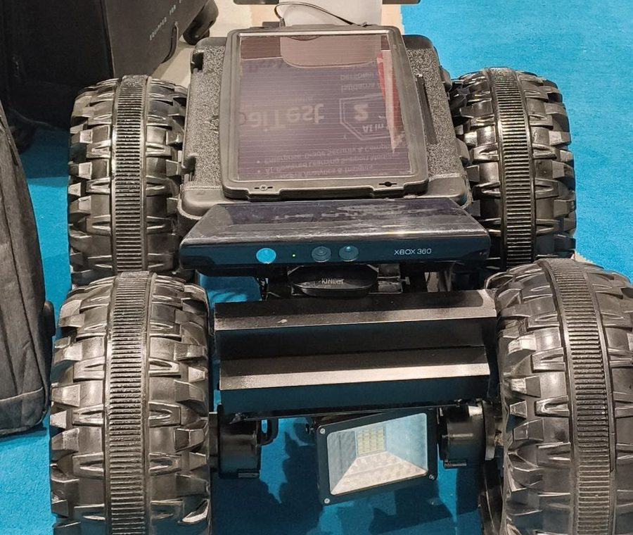
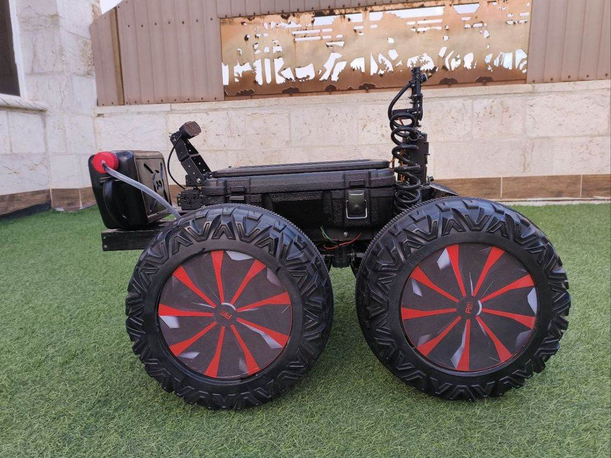
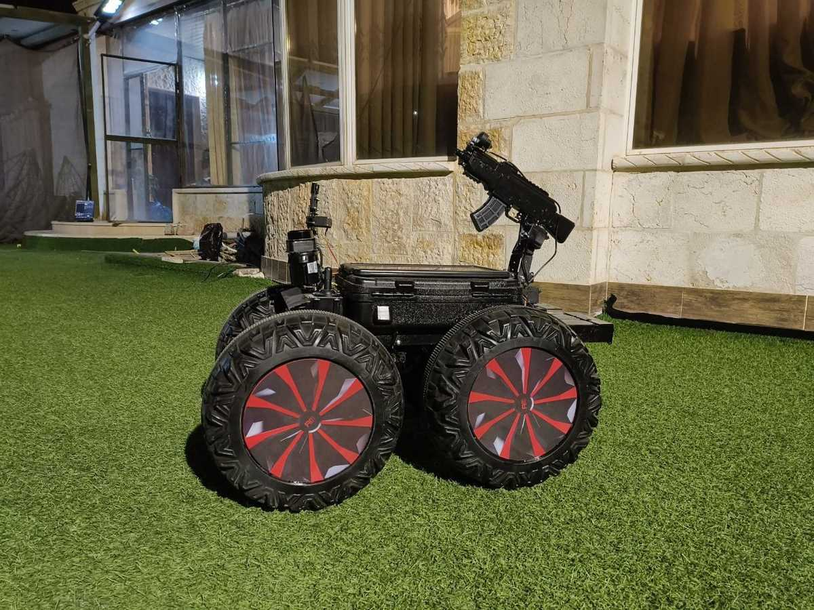

Anmar Momani أنمار المومني
Machines that see, track and decide in the field.
I design autonomous ground robots, vision-guided tracking systems and Arabic-language AI in Amman, Jordan, and I teach robotics in Arabic at Fikr-Bot, the school I founded.

144.800 MHz Operator
I build hardware you can carry outside, switch on, and trust without a network.
Most of my work starts where cloud tools stop: a greenhouse with no signal, a patrol route with no operator, a document archive that can't leave the building, a classroom where the good material is all in English. I design the robot, wire the sensors, train the model and write the software that holds it together.
- Now
- AI & Robotics Specialist, FB Group, Amman
- Also
- AI Engineer, Seagull AI Solutions (remote, Abu Dhabi)
- Founded
- Fikr-Bot, robotics and programming school, 2025
- Studying
- BSc AI & Data Science, Ajloun National University
- Writes
- Python, C++, Rust, SQL, Bash, in Arabic and English
433.920 MHz Flagship platform
M.P.M.R
One 4×4 skid-steer chassis, rebuilt four times. Everything below the deck stays the same: drive, power, sealed equipment case. Everything above it changes with the mission. Scroll to step through the builds.




-
01 Stage 1
Proof the drive platform could carry compute and sensors over rough ground. Xbox Kinect 360 depth for obstacle avoidance, teleoperation, onboard lighting.
-
02 GHRS greenhouse
Autonomous navigation between crop rows, a 6-DOF arm, and an EfficientNetV2-S disease classifier running on the robot: 85.4% accuracy at 0.65 confidence. Diagnosis happens on board, because greenhouses rarely have signal.
-
03 Crowd control
LIDAR and SLAM for mapping, depth, IMU and GPS fused for autonomous patrol with teleop fallback. Person detection, fire detection, and a tracked non-lethal water nozzle. Shown to Jordanian defence and public-security bodies.
-
04 SCORP turret
The current build. A stabilised pan-tilt turret that acquires a moving target and holds it, tested with a non-lethal platform. A 4×4 reconnaissance variant with Jetson Orin autonomy and long-range teleop is in development.
- Chassis
- 4×4 skid-steer, brushless
- Compute
- Raspberry Pi 5 · Jetson Orin
- Middleware
- ROS 2
- Sensing
- LIDAR · depth · IMU · GNSS
- Status
- Active development
915.000 MHz Tracking
Acquire, follow, hold.
SCORP and my vision-guided turret both solve the same loop: find the target in the frame, measure how far off-centre it is, and drive pan and tilt to close the gap without overshooting into oscillation.
The panel on the right runs a damped spring version of that loop. Your pointer is the target. Hold still and it locks. Leave it alone and it tracks a simulated contact.
- OpenCV and MediaPipe detection
- Pan-tilt servo control on a Pi 5
- Trajectory compensation on the vision turret

1280.000 MHz Feeds
Footage from the field and the bench.
Six feeds: the patrol unit at a public demonstration, the first drive test, Skywell tracking the sun, an airframe in CAD, and an RTL-SDR capture. Select any feed to open it with sound and controls.
1575.420 MHz Work
Equipment register.
Everything I've built or am building, robots to desktop software. Linked entries have a full write-up.
2412.000 MHz Teaching
Fikr-Bot فكر بوت
The good robotics material is in English, and it hits students at exactly the age when curiosity is highest and language confidence is lowest. Fikr-Bot teaches electronics, sensors, microcontrollers and AI in Arabic, on real hardware, from first circuit to working robot.
About Fikr-Bot2450.000 MHz Bench
Where it gets made.
Off the clock Comet
The original tracking system weighs under two hundred grams.
Comet is my kestrel. A kestrel can hang dead still in a headwind and lock onto a mouse moving in the grass below. It has no LIDAR, no Jetson and no training set. Every tracker I build is chasing what he does without thinking.
I also wrote the app that records what he eats. It runs on a ten-day feeding cycle rather than a week, so the same days don't keep drawing on the same wild prey. It's one HTML file and works on a phone in the garden with no signal.
Read about Comet5180.000 MHz Record
Service record.
-
2025 – 2026
AI & Robotics Specialist
FB Group, Firas Balasmeh Corporation for Control Systems · Amman
- Led the design of a 4×4 reconnaissance rover with Jetson Orin onboard autonomy and long-range teleoperation, and wrote its full technical specification.
- Built ROS 2 stacks on Pi 5 and Jetson Orin: SLAM, sensor fusion, teleop. Trained and deployed the GHRS plant-disease model.
- Delivered Arabic RAG assistants (FastAPI, Llama 3.1, ALLaM 7B, DeepSeek) and Arabic RTL document pipelines.
- Wrote technical proposals and solution architecture for government, public safety, education, agriculture and healthcare tenders.
-
2025 – now
Founder
Fikr-Bot فكر بوت
- Founded a robotics and programming school with hands-on courses in electronics, sensors, microcontrollers and code.
- Design the bilingual Arabic/English curriculum and coach students from first circuit to working robot.
-
2024 – now
AI Engineer
Seagull AI Solutions · Abu Dhabi, remote
- Led AI development for the SMART-CLASS LMS: agents, assistants and planners that raised platform autonomy and engagement.
- Built RAG agents for an AI tutor, plan generators and speech-to-speech bots, from ingestion and vector search to STT/TTS.
- Taught AI tools to teachers, lawyers and business professionals.
-
2024 – 2028
BSc AI & Data Science
Ajloun National University, Jordan
- Coursework in calculus, C++ and object-oriented programming.
Certifications
- 2026Open-Source Intelligence (OSINT), Basel Institute on Governance
- 2022TensorFlow for Deep Learning, freeCodeCamp
- 2022PyTorch for Deep Learning, freeCodeCamp
- 2020Ultimate Guide to Raspberry Pi, Udemy
- 2019Complete Python Bootcamp, Udemy
- 2018The Arduino and Electronics Bootcamp, Udemy
Loadout
- Robotics
- ROS 2, SLAM, Gazebo, MuJoCo, Jetson Orin, Raspberry Pi 5, ESP32, LoRa, GNSS/RTK, IMU and depth cameras
- Vision & AI
- PyTorch, EfficientNetV2, YOLOv8, MediaPipe, OpenCV, RAG, Ollama, Llama 3.1, ALLaM 7B, faster-whisper, Arabic NLP
- Backend
- FastAPI, PostgreSQL/PostGIS, SQLite FTS5, Docker Compose, Tauri, Prophet/ARIMA, Leaflet, Tesseract
- Fabrication
- FreeCAD, FDM printing, rapid prototyping of mounts and enclosures
- Mission
- Solution architecture, tender writing, Arabic RTL documents, Linux, Git
5800.000 MHz Contact
Open a channel.
Building something that has to work outdoors, offline, or in Arabic? Tell me about it.
amomnar@gmail.com